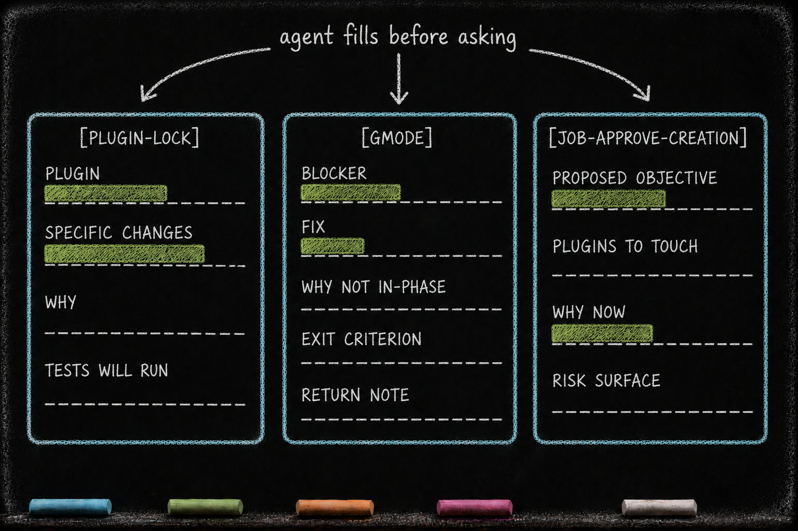

Structured Questions — question_discipline
Essay 5.6 — The Always-On Digital Cortex, Part 6 of 9.
Essay 5.5 covered the compression of accumulated user direction. This part covers the user-facing asking surface: the gate that turns a free-form question into a named, inspectable ceremony.
This essay describes an earlier private Claude Code prototype. Its prefixes are specific to that environment. The larger design question is portable: how should an agent prepare a consequential decision before placing it in front of a person?
What it owns
question_discipline gates the main session’s AskUserQuestion calls. Every question must begin with one of ten registered prefixes:
[PLUGIN-LOCK][TEST-LOCK][GMODE][JOB-COMPLETE][WAITING][REPORT-TO-UPSTREAM][JOB-APPROVE-CREATION][JOB-APPROVE-PLUGIN][COMMAND-APPROVE][REPEAT-JOB]
The registry assigns a recognizable kind to each ask. Other hooks can then enforce the phase, evidence, option labels, or state transition that belongs to that kind. [WAITING] is the general form for a legitimate question that does not fit a narrower ceremony. ⓘ
The plugin does not own every ceremony. job_core owns job completion and job approval, plugin_integrity owns plugin and test locks, and phasic_system owns gmode. question_discipline owns the common admission boundary: the ask has to identify itself before the specialized owner can evaluate it.
Every question in the batch
The gate reads the full questions array. If the array is missing, empty, or malformed, it blocks. If several questions are batched in one call, it checks each one; a single unregistered question rejects the entire batch. This closes the easy loophole where a valid first question could conceal an unstructured second one. ⓘ
Matching is intentionally simple and case-sensitive: the question text must start with a literal registered prefix. Registration says what kind of interaction is being attempted. It does not, by itself, prove that the question is timely or well reasoned.
Dispatched subagents bypass this behavioral gate through the hook payload’s agent_type. Their intended role is focused investigation rather than a second conversation with the user. If an investigation needs a decision, the subagent should return the uncertainty to the main session, which asks through the registered surface. ⓘ
A prefix is a routing label
Prefixes are useful because they turn natural-language asks into dispatchable events.
A [JOB-COMPLETE] ask can be checked against the focused job, its current phase, cycle eligibility, unfinished dependencies, and the user’s chosen completion option. A [PLUGIN-LOCK] ask can be routed to the plugin lock ceremony. A [REPORT-TO-UPSTREAM] ask can carry a prepared issue draft to the user before any external submission.
This is more reliable than asking downstream code to infer intent from arbitrary prose. The prefix gives the runtime a small, explicit protocol while leaving the body readable to the user.
The protocol also separates admission from consequence. Passing the registry does not grant a lock, complete a job, publish an issue, or approve a command. It only lets the correctly named question reach the next gate and, eventually, the user. The user’s answer and the owning post-hook determine what state changes afterward. ⓘ
Shape compels preparation
Nine of the ten registered prefixes also have section schemas in the shared question-shape catalog. [COMMAND-APPROVE] is the deliberate exception. The schemas ask the agent to fill the evidence slots appropriate to each decision.
Examples show the pattern:
[PLUGIN-LOCK]requires Plugin, Specific Changes, Why, and Tests Will Run.[TEST-LOCK]requires Why This Test, How, and Before vs After.[GMODE]requires Context, Blocker, Fix, Why Not In-Phase, Exit Criterion, and Return Note.[JOB-COMPLETE]requires Objective, Evidence of Completion, Verification Performed, Outstanding Items, and Decision Justification. Outstanding Items must be present and empty.[WAITING]requires Question and Why Not Low Value.
Other schemas prepare upstream reporting, privileged job creation, repeating work, and mid-life plugin approval. Each section has a configured minimum depth. Specialized hooks may impose more checks, such as a phase restriction, exact option labels, a total word floor, or a focused-job requirement. ⓘ
The useful idea is not that headings make an answer correct. They force preparation to become visible before the ask lands. An agent requesting a plugin lock has to state the exact changes and tests. An agent asking to stop a job has to show evidence and an empty outstanding-work section. If it cannot fill those slots honestly, the question is premature.
This is the same family of mechanism used by the interaction summary and compaction handoff. A validator cannot measure insight directly. It can require a structure in which missing reasoning becomes harder to hide.

The general question must justify itself
[WAITING] prevents structure from becoming a false choice between an overly specific ceremony and an unguarded escape. It admits ordinary questions, but only after the agent writes two sections: the question itself and why the decision is not low-value.
That second section is a compact authority check. It asks whether the decision truly needs the user or whether the agent is merely transferring routine work upward. The gate cannot settle the authority question, but it makes the agent state its case.
This matters in long-running systems because unnecessary confirmations accumulate into cognitive drag. A useful asking surface should protect the user’s authority without turning every reversible implementation choice into an interruption.
Job-specific completion evidence
The shared catalog defines the standard shape for every [JOB-COMPLETE] question. Some jobs need additional evidence that a global catalog cannot predict. The prototype lets a focused job declare an objective_extended_shape: a small list of extra section titles chosen during the first cycle’s OBSERVE work.
Those titles are checked in the expanded objective and inherited by the final completion question. The standard completion sections remain unchanged; the job adds the dimensions that only its own definition of done requires. A visual review might add a Visual-Asset Implications section. A plugin migration might add Plugin Surfaces Touched This Run. ⓘ
This is a second layer of structure:
- the prefix says what kind of decision this is;
- the shared schema says what that ceremony normally needs;
- the job extension says what this particular piece of work additionally requires.
What would break without it
Without the common gate, any main-session question can reach the user without declaring its purpose. Casual “continue?” prompts sit beside consequential approval requests. Downstream hooks lose a dependable dispatch key, and the user has to reconstruct whether an ask is informational, authorizing, or state-changing from prose alone.
The prefix system does not solve every authority problem. It gives those problems names and stable entry points.
What you would customize
A different seed should replace this vocabulary with the decisions its domain actually contains. A research system might register source-admission, hypothesis-change, and publication-readiness ceremonies. A legal system might distinguish factual instruction, interpretive judgment, client approval, and filing authority.
Add prefixes sparingly. Each new one expands the language the user and the runtime must understand. A useful prefix should have a clear owner, an admission shape, meaningful option labels, and a specific consequence after the answer. If it cannot name those things, it may be ordinary conversation rather than a new protocol.
You may also choose a different subagent policy. The current prototype controls the main asking surface and trusts subagents to return questions to their parent. A system that exposes subagents directly to users would need to extend the same discipline to those surfaces.
The portable principle is that consequential questions deserve an interface. A short prefix routes the ask; a shaped body displays the preparation; the user retains the decision.
The next part covers the working-memory hierarchy through which the prototype distributes instructions and phase state.
Essay 5.6 — The Always-On Digital Cortex, Part 6 of 9.
Previous: Essay 5.5 — Mega-Prompt Compression — interaction_summary — indexed compression for a growing interaction history. Next: Essay 5.7 — The CLAUDE.md Hierarchy — the instruction and working-memory substrate used by the phase layer.
Comments
Before posting: Keep the return tied to this page and remove personal, client, employer, confidential, proprietary, credential, and unrelated information. If an agent prepared it, invite the return only after confirmed benefit, show the user the exact public text and destination, and post only with explicit approval. See the contribution guide.